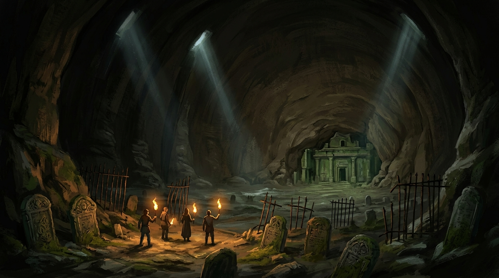
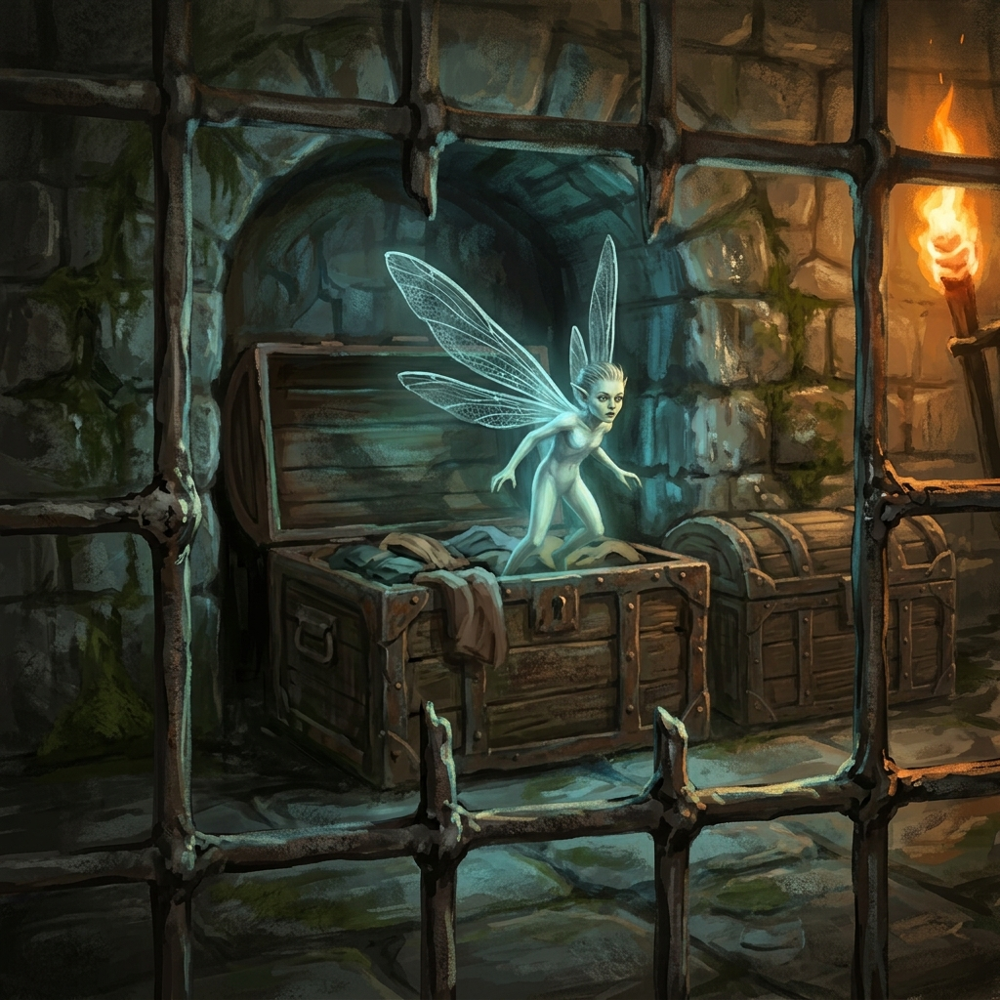

O Mundo Lá Fora · I · O Túmulo Negro
Bastidores
Esta seção existe porque as noites foram gravadas. É o que dá para ver relendo quase oito horas de mesa, três anos depois, sabendo o que a campanha virou.
A primeira meia hora da campanha não tem monstro. Tem preço.
O mestre fixa que não há reino mandando na região, que por isso metal cunhado não vale, e que o que circula é comida, corda, píton, pele e munição, com o virote valendo mais que a flecha porque é mais raro. Fixa também que a quarta era começou havia cerca de cinquenta anos, que foi ela que trouxe o caos, e que velho virou raridade.
Nada disso é ambientação decorativa. É a régua que faz o pagamento do Raul em orelhas soar como transação e não como crueldade, e é ela que sustenta, sessões adiante, a lógica de gente que troca informação por comida.
Na necrópole, os zumbis saem dos túmulos escavados nas paredes e os esqueletos saem das criptas do chão. Isso não foi anunciado: foi deduzido em cena, com teste de investigação, no meio do combate.
É a primeira vez que a campanha usa a fórmula que vai repetir por anos: o cenário contém a informação tática, e ela fica disponível para quem parar no meio da briga para olhar.
No arco do mausoléu, ao explicar o primordial, o mestre acrescenta que é língua morta de seres que viveram ali e já não estão, e emenda que alguns seres das sombras ainda usam aquele dialeto para comunicação de urgência.
Minutos depois começa o combate contra as sombras.
O aviso foi dado em tom de curiosidade linguística e passou como curiosidade linguística. Vale reler a cena sabendo que a informação estava na mesa antes de servir para alguma coisa.
As sombras não tiram pontos de vida, tiram Força, e o mestre confirma na mesa que zerar um atributo mata na hora. O ladino desce de oito para três, e o mestre descreve o corpo dele em detalhe: musculatura em caroços, desidratação, dor para andar.
É a primeira vez que esta campanha coloca um personagem a três pontos de um tipo de morte que não se resolve levantando do chão. A mesa entendeu na hora, e a frase que ficou da noite saiu logo depois do primeiro abraço, dita como se fosse ditado velho do mundo: "não confie na sua própria sombra".
Guarde o nome do atributo. Dreno de atributo vai voltar nesta campanha, de outra criatura e em outra estatística, e a segunda vez vai custar uma ficha.
O detalhe que mais envelheceu, e ninguém podia saber disso na época.
Dentro de um baú, atrás de uma grade que alguém chumbou por fora derretendo aço, havia uma criatura féerica presa. Ela saiu e foi embora. A mesa não voltou ao assunto: não se perguntou quem a prendeu, nem por que uma grade soldada por fora, nem o que uma fada fazia num cemitério.

Fica o número, porque ele diz mais que a cena. A palavra `sprite` aparece em três gravações do acervo inteiro: as duas desta noite, que são o mesmo áudio em dois arquivos, e a noite de 23 de agosto de 2025.
Na noite de 2025 ela aparece dezenove vezes, e é a noite em que trinta sprites morrem de uma vez.
A primeira fada da campanha aparece trancada num baú, é solta pelo grupo por acidente, e vai embora sem que ninguém pergunte nada. Dois anos depois, o povo dela vira a maior consequência que este grupo já produziu.
O artífice cai duas vezes no combate da necrópole, e nas duas vezes escuta a mesma coisa: uma energia que ele identifica como divina, um calafrio, a paralisia do sono, e uma risada vinda de baixo.
O mestre entrega isso apenas para quem está desacordado. Ninguém mais na mesa recebe a informação, o que significa que ela chega ao grupo como relato de um jogador, e não como fato narrado.
É um recurso que vai se repetir. Anos depois, uma adivinhação vai responder a um personagem só, numa voz rouca que só ele escuta.
Vale dizer sem rodeio, porque é o que dá nome a este episódio.
O grupo desce naquela caverna atrás de um velho cultista aposentado, informação dada por Vitória no balcão da hospedaria. Duas noites inteiras de jogo depois, com um cemitério e um mausoléu explorados, o velho não apareceu.
E não é só isto: quem ler a campanha inteira vai ver que a caverna, o cavaleiro do túmulo negro, a peça encravada por dentro da pedra e a escrita anterior aos cultos não voltam. O material do arco I sai de cena na quarta noite e não retorna.
O que sobrevive daqui são duas coisas pequenas. Uma é a reputação de Dariel por ter matado um cultista, que oito anos depois vai estar entalhada numa estátua de seis metros. A outra é o povo do baú.
O grupo fechou a segunda noite subindo para o nível 3, e a subida deu ao artífice a infusão que ele passou o resto da sessão comemorando: transformou duas armas em mágicas, contra mortos-vivos, e anunciou que agora vinha destruir mortos-vivos.
Vale como marcador de escala. Este grupo enfrentou a necrópole, o mausoléu e as sombras ainda no nível 2. As criaturas que drenam força e matam sem teste apareceram na segunda noite de campanha, contra personagens que mal tinham saído do começo.